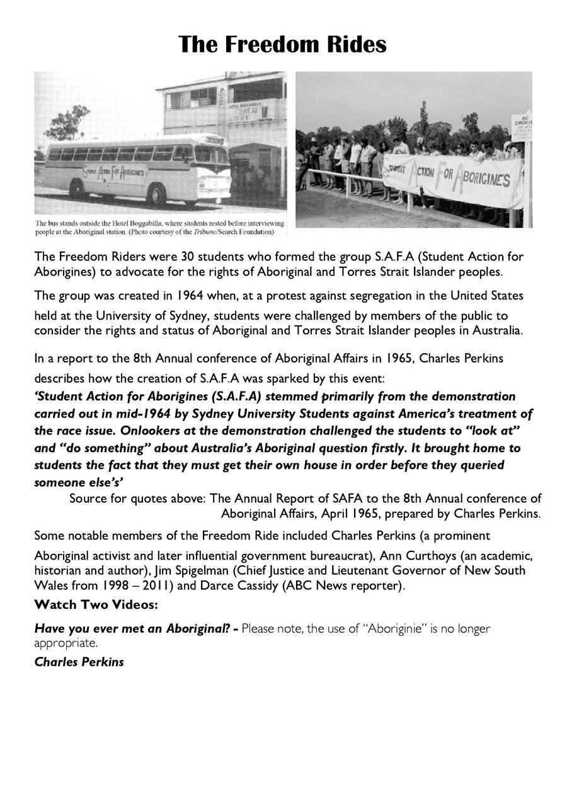
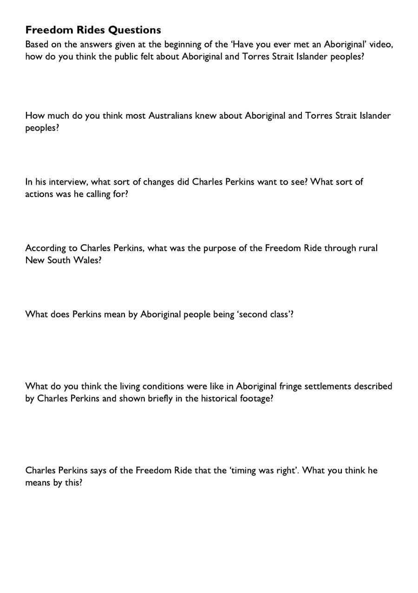
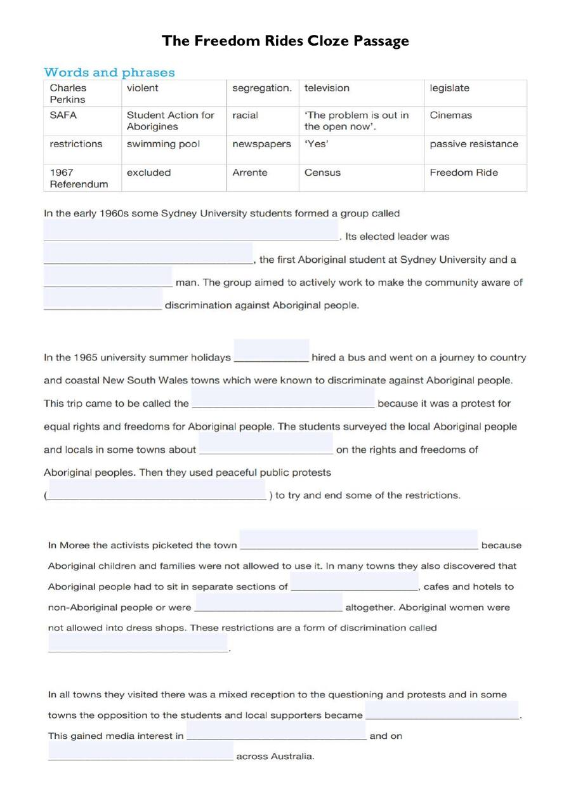
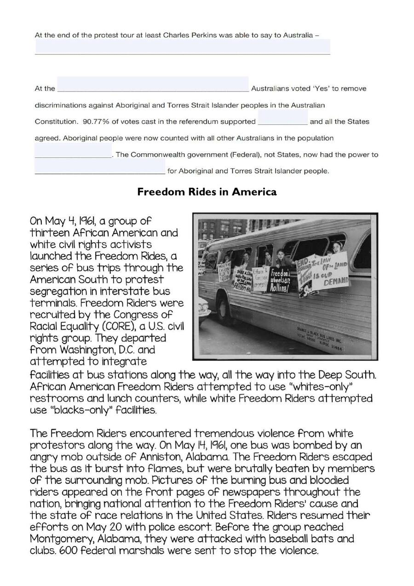
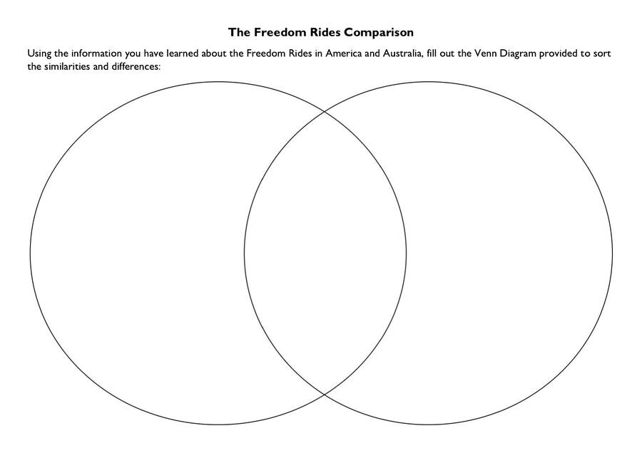
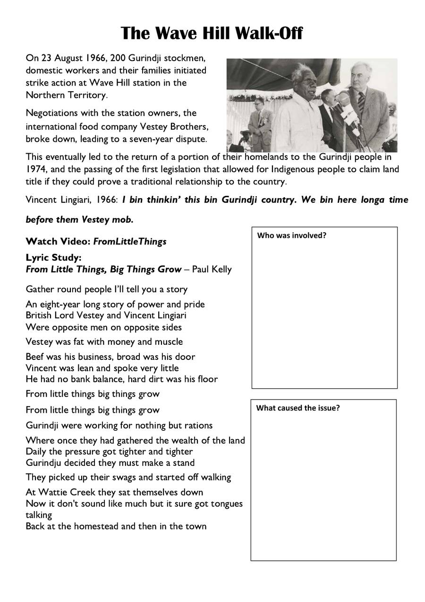
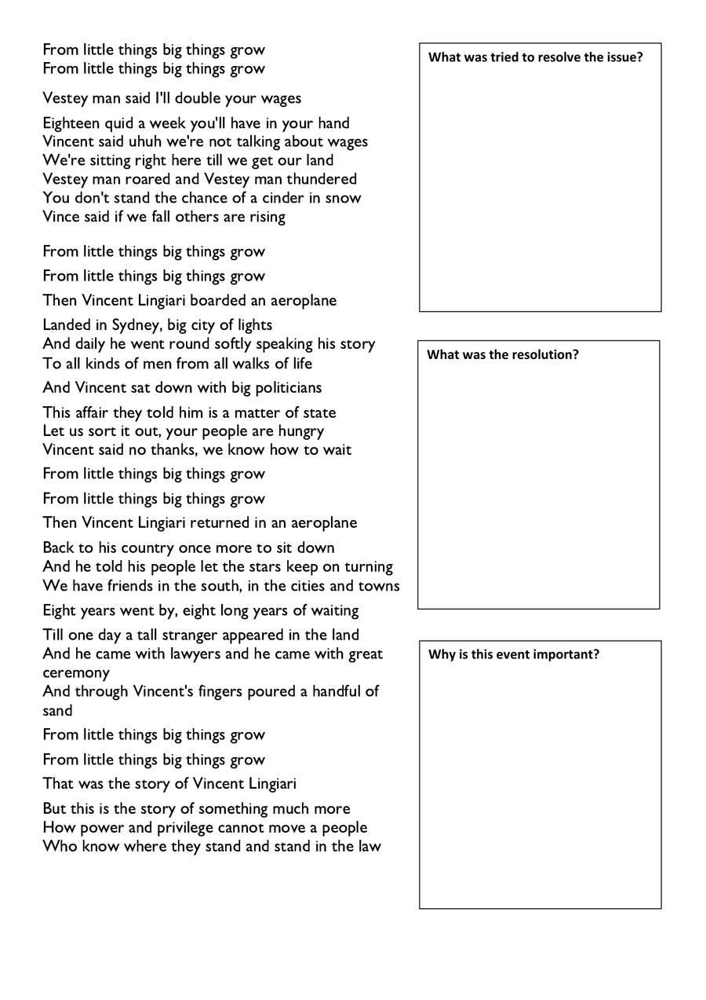

If you saw someone being treated unfairly because of who they are, what would you do? What does it take to stand up for someone else's rights — especially when it's uncomfortable or unpopular?
🎯 Learning Intention
By the end of this lesson I can explain the purpose and outcomes of the Freedom Rides, compare them with the American Freedom Rides using a Venn diagram, describe the Wave Hill Walk-Off and its significance, and analyse a song as a historical source.
⚠️ Warning: The video 'Have you ever met an Aboriginal?' contains terminology no longer considered appropriate — this is noted below.
The Freedom Rides

📹 Watch
Have you ever met an Aboriginal?
⚠️ The term 'Aboriginie' used in this historical footage is no longer appropriate. Use 'Aboriginal' or 'First Nations Peoples'.
📹 Watch
Charles Perkins — Interview

Freedom Rides Questions
1Based on the video, how did the public feel about Aboriginal and Torres Strait Islander peoples?
2How much do you think most Australians knew about Aboriginal peoples at this time?
3What sort of changes did Charles Perkins want to see? What actions was he calling for?
4According to Perkins, what was the purpose of the Freedom Ride through rural NSW?
5What does Perkins mean by Aboriginal people being 'second class'?
6What do you think living conditions were like in Aboriginal fringe settlements?
7Charles Perkins says the 'timing was right'. What do you think he means?
The Freedom Rides Cloze Passage
Study the cloze passage from your booklet, then answer the questions below:


Cloze Passage Questions
1What was the name of the group formed by Sydney University students, and who was its elected leader?
2What was the name given to the trip through rural NSW, and why was it called that?
3In Moree, what did the activists picket and why? What other forms of segregation did they discover?
4How did the Freedom Ride gain attention across Australia? What was the reaction in different towns?
5What was Charles Perkins able to say to Australia at the end? What happened at the 1967 Referendum as a result?
The Freedom Rides Comparison
Study the information about Freedom Rides in America from your booklet:

Venn Diagram — Australia vs America
🇦🇺 Australia Only
🌐 Both
🇺🇸 America Only
The Wave Hill Walk-Off

📹 Watch
From Little Things, Big Things Grow — The Wave Hill Walk-Off

Lyric Study — From Little Things, Big Things Grow
Who was involved?
What caused the issue?
What was tried to resolve it?
What was the resolution?
Why is this event important in Australian history?
🪞 Lesson Reflection
What was the most significant moment or action you learned about, and why?
Paul Kelly's song shows the power of persistence. Can you connect 'from little things big things grow' to something happening today?
The Freedom Riders were mostly young university students. What does this tell us about who can make a difference?
Finished? Save your answers!
Click below to download your answers as a Word document and submit to your teacher.